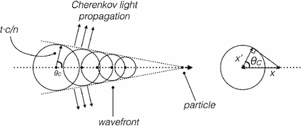
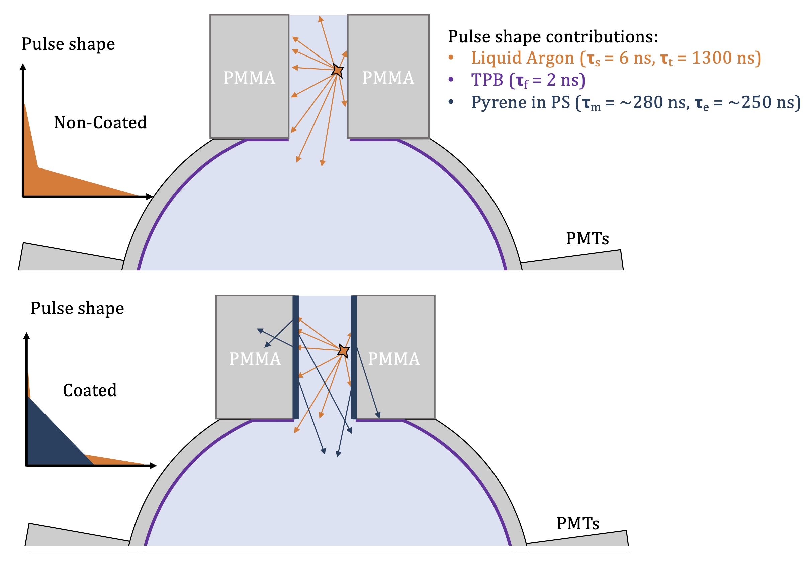
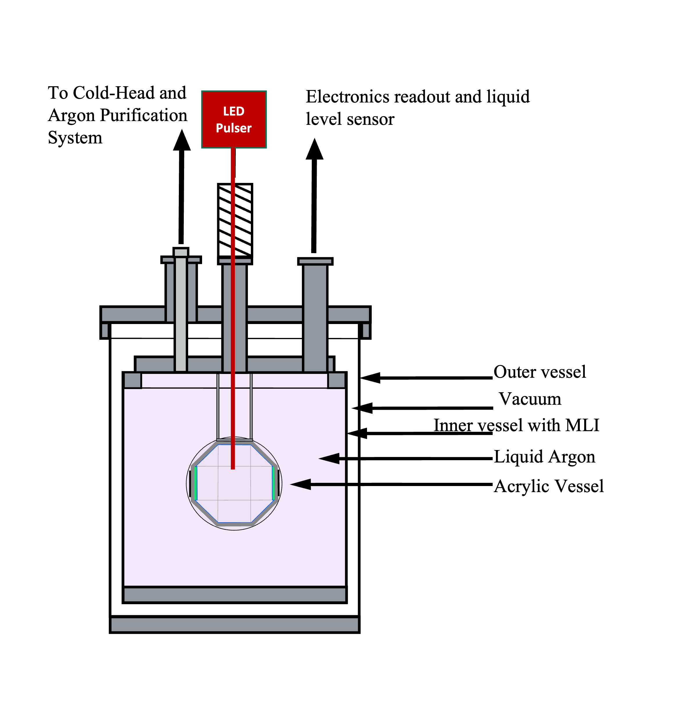
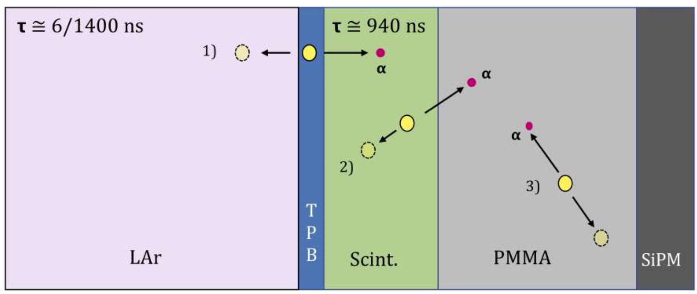
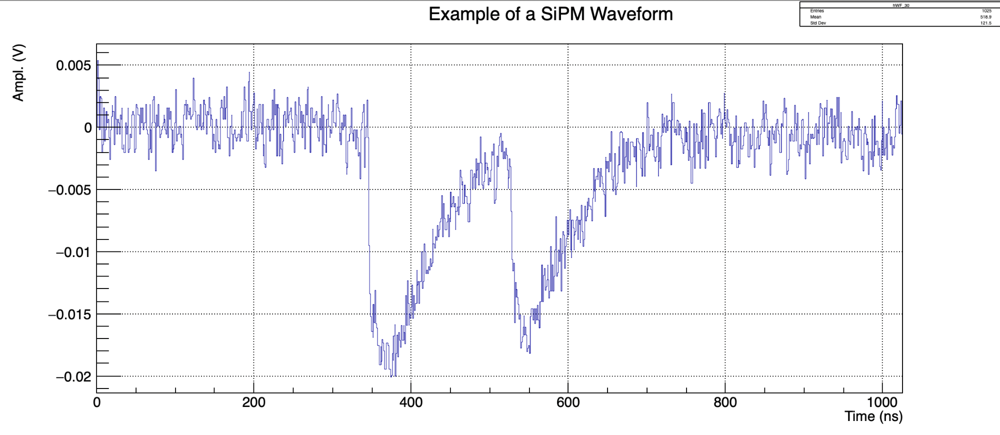

This section includes some physics related programming work I've contributed to.
MERCI
MERCI is a modular online/offline waveform analysis software in development for fast implementation and analysis of digitized waveform data for SiPM and PMT based experiment readout. MERCI is being developed by scientists from the Darkside, nEXO and Alpha collaborations for live experimental data analysis. I am one of the lead developers of the project, which is still in it's early stages. If you're interested in using or contributing to MERCI please reach out!
ROOT Tutorial & other small projects
I've written and shared a short tutorial for compiling a custom project into ROOT, this is a good starter template for a new compiled ROOT/C++ project and explains things at a lower level than in the ROOT Reference guide materials. I also post other physics programming projects on my GitHub for sharing as well.
Science Outreach
See below for information on some science outreach projects I've been a part of!
Let's Talk Science
LTS is a national science outreach organization that partners university science students with local elementary and high school's. They bring practical and fun science demonstrations to schools and perform live experiments with the students involved. I volunteered with LTS for 2 years while at Carleton University and it was a blast! LTS performs a critical service of providing science outreach to underrepresented areas, and has dozens of dedicated excursions to isolated indigenous communities. See below for more information on Let's Talk Science.
Ottawa Science Innovation Challenge
For two years I volunteered with the Ottawa Science Innovation Challenge. OSIC is a science competition that high school students across Ontario can take part in. The challenge is a great opportunity for interested high school students to get a taste for what real science looks like. Contestants are required to come up with a novel research question, perform a thorough literature review and write an experimental proposal, which is graded by volunteer graduate student researchers. The theme of the competition varies from year to year, but focusses on real cutting edge scientific questions. For two years I volunteered as a guest judge and provided feedback on students scientific proposals. This was a great experience and I was able to learn a lot from the program as well as from the students!
Figure: DEAP-3600 Dark Matter detector during construction at SNOLAB. Image from the DEAP Website
Dark matter is a theorized type of matter that is invisible to us because it doesn't interact electromagnetically. The presence of dark matter has been demonstrated by its gravitational pull on normal matter. The best known observation of this comes from measuring the rotational velocities of spiral galaxies like our own milky way. If all the matter that existed in our galaxy was visible, then according to newtonian physics the velocity of stars far away from the centre of the galaxy should be much slower than those near the centre, due to the smaller amount of matter present in the edges. Excitingly, we observe the opposite! The velocity of objects on the edges of spiral galaxies is much higher than the amount of visible matter can explain, and here is where dark matter is posited. By having a "cloud" or "halo" of dark matter surrounding the whole galaxy, we can explain the observations. This is one of many observations that points towards the existences of dark matter in our universe, and the amount of dark matter is astonishing, our best estimates say that we should have about 5x more dark matter than normal matter in the universe [1] ! This means that all of our observations of the universe have only been exploring a small slice of what is out there, by only looking at the visible matter in stars, galaxies and humans.
The Dark Matter Experiment using Liquid Argon Pulseshape Discrimination (DEAP-3600), is a direct dark matter search experiment located at SNOLAB, Sudbury Ontario. For the past ~4 years, I've been part of the DEAP Collaboration, a team of 100+ researchers from around the globe who work on the DEAP-3600 experiment. The DEAP experiment is a direct dark matter search experiment, this means that it is hoping to detect a signal from a so-called "direct interaction" of dark matter with our everyday normal matter, which the detector and target are composed of. A direct signal of dark-matter interactions, if observed, would give us a window into a huge part of the universe that is currently unexplored.
For my bachelors thesis project I performed ex-situ measurements of Cherenkov radiation produced by irradiating samples of the DEAP-3600 acrylic vessel with high energy gamma particles. When high energy beta particles (electrons) move through materials they produce a certain type of radiation known as "Cherenkov" radiation, named for its discoverer, this radiation is in the form of highly ultra-violet light emission, but produces broad spectrum light, meaning across all the UV and visible spectrum. This process is similar to a sonic boom, but for light, and is illustrated in the figure below from [2].
Figure: Cherenkov Radiation produced by an electron, the radiation is produced in a broad wavelength and has a characteristic cone of emission, oriented around the particle, from [2]
Cherenkov radiation is produced in DEAP-3600 by beta decays from radioisotopes present in small quantities inside detector materials, this produces small amounts of visible light that could potentially mimic a dark matter signal in the detector. I performed detailed simulations of Cherenkov radiation and optical transport using a GEANT4 based Monte-Carlo package called RAT. This was done to improve our understanding of Cherenkov backgrounds inside DEAP. Using these updated models we predicted the amount of Cherenkov backgrounds we would expect to see inside our dark matter search region with the full data-set of DEAP. To read more about the DEAP-3600 experiment checkout the full list of publications!
P. Collaboration, “Planck 2018 results. vi. cosmological parameters”, 2020.
Cerrito L. (2017) Cherenkov and Transition Radiation: Detectors for PID and Neutrinos. In: Radiation and Detectors. Graduate Texts in Physics. Springer, Cham. https://doi.org/10.1007/978-3-319-53181-6_11
Wavelength Shifters
Wavelength shifters are used in particle physics to shift ultra-violet light into visible light. This is done because most photosensors used to detect this light have optimal detection efficiencies in the visible region. By using a wavelength shifter to transform the UV light into VIS, we increase the amount of signal we can detect, which can make a large impact on the detectors performance.
Organic wavelength shifters composed of conjugated aromatic hydrocarbon rings which strongly absorb UV radiation, this absorption puts the molecule into an excited state which eventually decays back down to a ground state, and the loss of energy due to non-radiative transitions causes the net shift to lower energies (longer wavelengths). An example of the pyrene molecule is shown below.
Figure: Pyrene Molecule, Pyrene is an organic molecule composed of four benzene rings and is commonly used for fluorescence applications.
For my research we employed an organic wavelength shifter, known as "TPB" to shift the vacuum ultra-violet argon scintillation light (~128 nm) to the visible (~400 nm) in order to detect signals in a liquid argon detector using traditional photosensors. This greatly improves our detection efficiency, allowing us to detect lower energy signals then we would have otherwise been able to. In addition to applying TPB to detector surfaces we also investigated the use of custom wavelength shifters to help with separating backgrounds from signals in the dark matter detector DEAP-3600. This work is described in the recently submitted article [1], which I was the lead author of.
I led the working group responsible for creating and characterizing this custom wavelength shifter, which was made using the organic fluor pyrene. This coating was created to coat the inside of the inlet of the DEAP-3600 detector, which due to the poor light collection efficiency in this region (From the shadowing of the inlet), decays from these surfaces are a leading background for the dark matter search with DEAP-3600. The technique is illustrated in the figure below; when the inlet is coated in this custom wavelength shifter, the light from this region will be shifted into visible, increasing the amount of signal observed inside the detector. In addition, due the coating's long time constant, the light will be delayed, producing a measurable effect in the time response which can be used to separate these events from potential dark matter interactions from the inside of the detector.
Figure: By coating the inlet of the detector with a custom WLS coating with a "slow" time constant, we can separate decays from the inlet, from dark matter events inside the detector, figure from [1]
As part of this work I created a simulation model for the expected response of the detector to light produced in this inlet using toy Monte-Carlo techniques. Analyzing these preliminary simulation results shows that this technique will be efficient enough to remove all such backgrounds from the dark matter search region. The newly coated inlet components will be installed in DEAP-3600 in early 2022.
D. Gallacher et. al (2022). Development and characterization of a slow wavelength shifting coating for background rejection in liquid argon detectors, Submitted to NIMA, arXiv
R&D for Future Direct Dark Matter detection Experiments
Figure: 3D model of the Darkside 20K detector, a next-generation liquid argon dark matter detector in construction at Laboratori Nazionali del Gran Sasso, Italy. Image from http://deap3600.ca/darkside-20k/
Dark matter has evaded direct detection for 20+ years now, and as the required search sensitivities get higher; the detector size and complexity have increased in paralell.
Next generation liquid argon detectors will be much larger than the current tonne-scale experiments, and will require technological advancements that scale well. To test new techniques for background rejection, and technologies for future liquid argon based dark matter detector, during my Master's project we built and commissioned a small-scale R&D detector at Carleton University called "Argon-1", shown in the image below.
Figure: Drawing of the Argon-1 Detector at Carleton University, the inner acrylic vessel is outfitted with Silicon photomultipliers for scintillation light detection
Argon-1's inner vessel is composed of an acrylic vessel that has been coated on the inside with the wavelength shifter "TPB" (See my section on wavelength shifters for more information about how this works). The ultra-violet argon scintillation light is converted into visible light by this coating and then is detected by single-photon sensitive light detectors known as "Silicon Photomulitpliers" or SiPMs for short. See here for more information about how these sensors work.
Over my master's project we built and commissioned the Argon-1 detector, which you can read about in full detail in my thesis [1]. This work included building and configuring the ultra-high vacuum system and purification loop to ensure high purity argon, cryogenics and control software for cooling, design and configuration of a data-acquisition system that is used for reading out the data from the 100+ sensors planned for installation inside Argon-1. During my thesis work we had 65 channels of SiPM's installed, which required designing custom readout electronics and a ultra-high vacuum compatible feedthrough for 160 coaxial signal channels.
The initial research goals for Argon-1 include demonstration of a novel surface background rejection technique that could be employed in future liquid argon detectors. This technique is explained in [1] and [2] in full-detail. Additional goals include testing the operation of large amounts of SiPMs in a liquid argon environment, and to study the scintillation mechanisms of liquid argon using a deployable source mechanism.
The background technique just described could completely remove a dominant source of background events for argon-based dark matter detectors such as DEAP-3600 [3]. The backgrounds in question come from alpha-decaying isotopes present on the detector surface, either from natural radioactive isotope presence (Uranium/Thorium) or the daughter isotopes of radon gas, which is present in small quantities in air, and will leave trace amounts of radioactivity on all surfaces exposed to air.
Figure: Close-up of the surface of Argon-1. The CaF2 scintillator panel acts as a buffer volume between the active liquid argon and the non-active acrylic (PMMA). When decays occur on the surface in this configuration, the decay radiation is forced to cross the active scintillator layer, which produces light with different characteristics from the liquid argon scintillation. For full details see [1,2].
This surface background technique is outlined in the figure above, as explained in the caption, the introduction of the green scintillator layer, allows events from the surface of the detector to be tagged due to the difference in it's scintillation properties when compared to liquid argon scintillation. In my thesis I explore how this might effect future detectors, and show from simulations (So take with a grain of salt) that using this technique would reduce the surface alpha activity of a future detector like DEAP-3600 by a factor of 10^5. This would effectively eliminate what is currently a major background component for these detectors.
Gallacher, D. (2021) Commissioning and Calibration of a Small-Scale Modular Liquid Argon Detector, Argon-1, for Novel Studies in Background Rejection Techniques Towards Next-Generation Dark Matter Detectors. Ottawa: Thesis (M.Sc.) - Carleton University, 2021, DOI
D. Gallacher and M. Boulay (2020), Surface background rejection technique for liquid argon dark matter detectors using a thin scintillating layer. Proceedings for LIDINE 2019, JINST Vol 15 (2020), arXiv
DEAP Collaboration (2019), Search for dark matter with a 231-day exposure of liquid argon using DEAP-3600 at SNOLAB. Physical Review D 100, 022004,arXiv
Light Detection For noble Liquid Detectors
WIP
Light Detection For Noble Liquid Detectors
Figure: Picture of a Hamamatsu Silicon photomultiplier array (64 total SiPMs) on a custom board, which I helped design.
Silicon photomultipliers (SiPMs) are solid-state photon detection devices which are capable of detecting even a single photon. They have exceptionally good timing performance, with resolutions on the order of 100 ps (This means that the time determined using the device is accurate within ~ 100 ps) with fast electronics.
SiPMs are used in liquid noble gas detectors to measure scintillation light, which is produced by the liquid when particles pass through the material and lose energy in the medium. This scintillation light is produced in proportion to the energy left behind in the medium (The liquid argon or xenon for example), and has properties that vary depending on the type of particle that produced it. By measuring this light, we're able to understand the type of particle interactions that occur inside the detector. In particular, SiPMs are capable of measuring individual photons, even in the deep ultra-violet spectrum, where liquid noble gases scintillate (100-200 nm region), as well as operate in the cryogenic conditions these detectors are operated in (70-170 K). An example of what this SiPM output looks like from the liquid xenon detector at McGill, LoLX, is shown in the figure below.
Figure: Example of SiPM signal from the Light-only-liquid Xenon detector at McGill university, The two pulses are individual ~175 nm photons hitting the SiPM sensor inside the liquid xenon cryostat. As we can see, each individual photon is not only discernible, but we can also measure their arrival time with < 1 ns accuracy!
Future rare event search detectors, such as Darkside 20k and nEXO[1,2], will use SiPMs to take advantage as their timing performance, and their radio-purity. Since SiPMs are made from almost entirely silicon, they can be purified and manufactured in a very "clean" way. What this means for rare-event search experiments such as dark matter or neutrino-less double beta decay detectors, is that they have very low concentrations of harmful radioactive isotopes such as Uranium, and Thorium. Uranium and Thorium are present in pretty much all materials on earth, in trace amounts, although some materials have higher concentrations than others. Uranium and Thorium are very long lived (With half lives O(billions of years)), and have long decay chains full of other radioactive decays which make them troublesome for all rare event search experiments, where even a single radio-active decay from these isotopes in the search region can have a big impact on their capabilities. In order to reach the sensitivities required for these rare searches, experiments are located in deep underground labs such as SNOLAB [3], and are constructed from materials that are as "radio-pure" as possible. This makes SiPMs an even more attractive candidate for photon detection for future detectors, and will help reach the sensitivities required for measuring the universes most rare processes!
To read more about these cutting edge devices, checkout this great web page overview by Hamamatsu!
{kind=link}